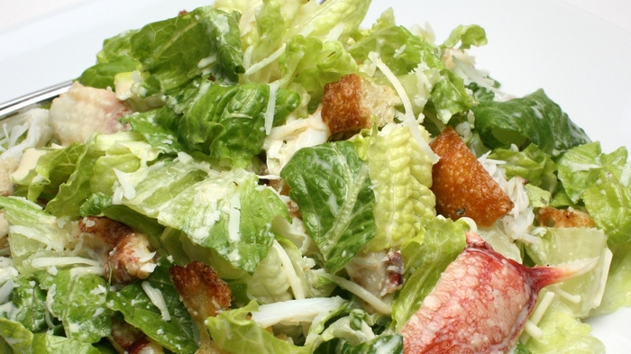

FOOD PLACE
სალათი "ცეზარი"

ინგრედიენტები:
ქათმის ფილი - 200 გ
სალათის ფურცლები - 20 ც.
პომიდორი ჩერი - 5 ც.
თეთრი პური - 200 გ
მაგარი ყველი - 50 გ
ნიორი - 2 კბილი
მცენარეული ზეთი - 4 ს.კ.
მაიონეზი
მარილი გემოვნებით
მომზადება
1. სალათის ფურცლები ჩადეთ ცივ წყალში 1 საათით იმისათვის, რომ გამოცოცხლდეს და გახდეს ხრაშუნა.
2. თეთრ პურს მოაშორეთ ქერქი და დაჭერით დაახლოებით 1 სმ ნაჭრებად, შემდეგ დააწყეთ ტაფაზე და გააშრეთ არც ისე ცხელ ღუმელში.
3. ღრმა ტაფაზე დაასხით ზეთი და დადეთ წვრილად დაჭრილი ნიორი. როგორც კი ნიორი გამუქდება, გადაიღეთ ტაფიდან და ზეთიან ტაფაზე დადეთ თეთრი პურისაგან დამზადებული ორცხობილა. შებრაწეთ ოქროსფრად და შემდეგ გადაიღეთ ქაღალდის ხელსახოცზე ზედმეტი ცხიმის მოსაშორებლად.
4. ქათმის ფილეს დააყარეთ მარილი და შეწვით მზადყოფნამდე, შემდეგ გააციეთ და დაჭერით თხელ ფირფიტებად.
5. სალათის ფურცლები ხელით დაგლიჯეთ, ყველი დაჭერით თხელ ფირფიტებად. პომიდორი ჩერი გაჭერით ოთხ ნაწილად.
6. სასალათეში გადაიღეთ ყველა ინგრედიენტი, ოდნავ შეანჯღრიეთ, კარგად რომ აირიოს ერთმანეთში, და მაშინვე მიიტანეთ სუფრასთან.